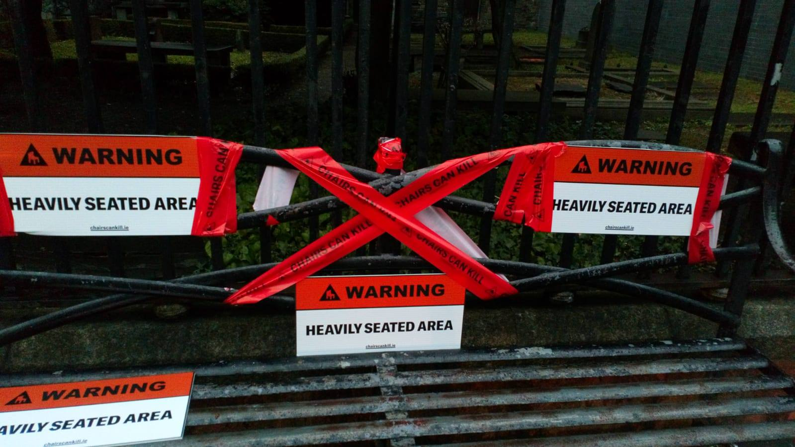

Chairs can kill
Irish workplaces, schools and colleges need to do more to help employees and students stand up for their health.
This was the message from the Irish Heart Foundation as it revealed new figures that found that more than half of people surveyed, said their school/college/workplace did not create opportunities for them to sit less during the day.

As part of its Chairs Can Kill campaign, the Irish Heart Foundation has published research conducted by Ipsos MRBI which found that people in Ireland spend on average 3.6 hours every day sitting down at work, school or college but almost three fifths (59%) reported that their school/college/workplace did not create opportunities for them to sit less during the day.
The Irish Heart Foundation’s Chairs Can Kill campaign, aims to raise awareness of the risks to people’s heart health of sitting for long periods of time.
26th Sep 2018